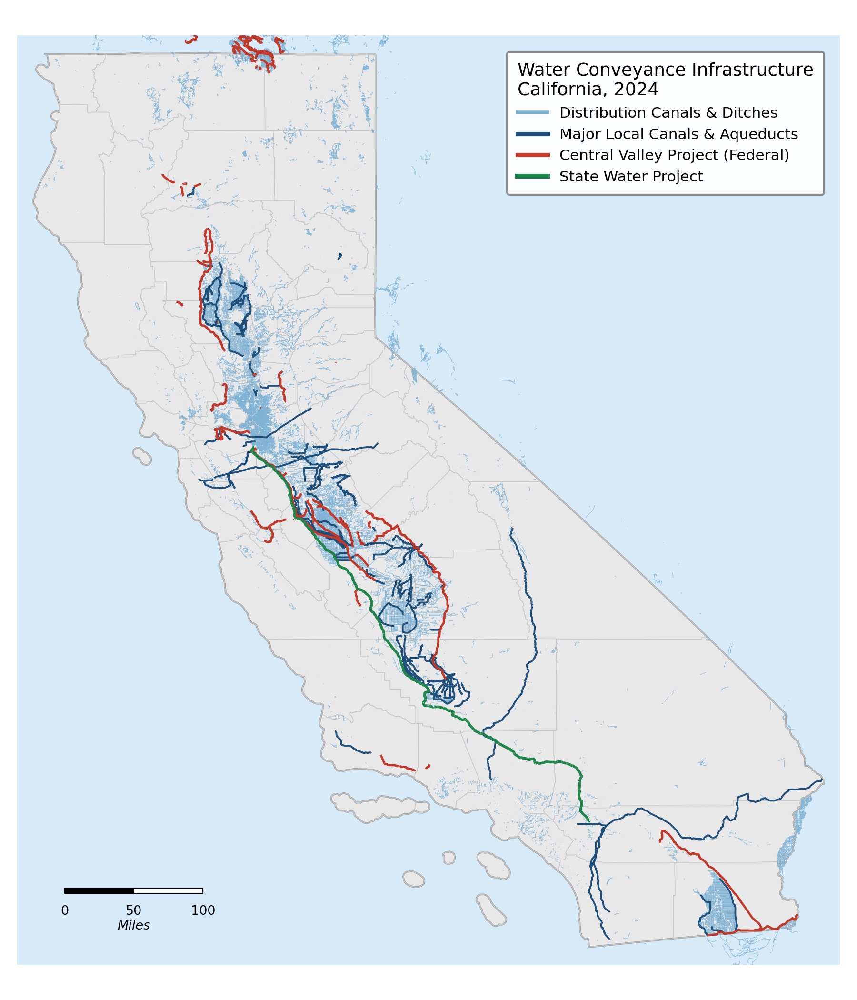
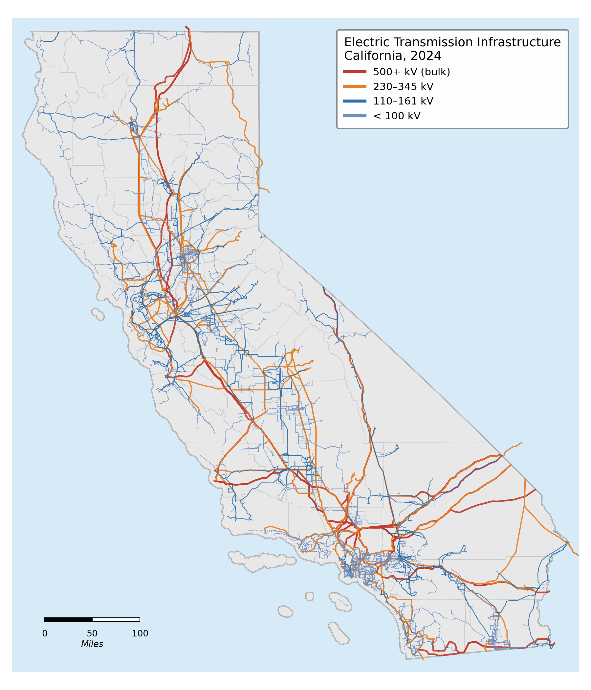
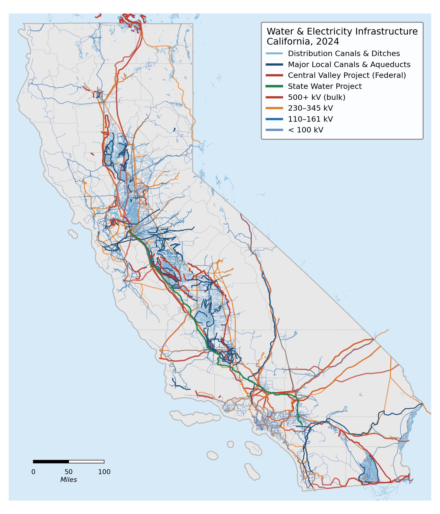

How Big Is This?
Agriculture uses approximately 80% of California's developed water supply. Pumping, pressurizing, and moving that water consumes about 7% of the state's total electricity[1] — making agriculture and water pumping one of California's largest electricity end-use sectors. California's electric grid and its water conveyance infrastructure are deeply intertwined: the State Water Project, the Central Valley Project, and the Metropolitan Water District alone account for roughly 40–50% of all agricultural and water pumping electricity in the state.
Two networks, one map
California's water conveyance system and its electric transmission grid trace the same state. Both look like arteries and capillaries moving a vital commodity. But beyond the geometry, they could not be more different — in age, in speed, in how much capital is invested in them, and in how accurately their output is priced.



Water System
- Old. Most major federal canals and aqueducts date from the 1930s–1950s; the State Water Project was completed in the early 1970s.[19] Much of the local distribution network is older still.
- Slow. Open-channel canals are designed for flow velocities of roughly 3–5 feet per second[20] to limit erosion — water arrives on the order of hours to days, not seconds.
- Underfunded. PPIC estimates a $2–3 billion annual funding gap across California's water system — infrastructure spending has lagged system aging for decades.[21]
- Underpriced. Federal irrigation contract rates can be under $40 per acre-foot;[22] urban wholesale rates run $1,000–$2,000+ per AF; desalinated seawater is ~$2,200–$2,800 per AF.[23] The same commodity, priced across two orders of magnitude.
Electric Grid
- Modern. The grid has been continuously modernized with new transmission, utility-scale storage, and sophisticated market software. Most infrastructure in active service has been rebuilt or added since 1980.
- Fast. Electricity moves at effectively the speed of light. The entire state balances generation and load in real time, second by second.
- Well-funded. PG&E alone announced a $73 billion five-year infrastructure plan (~$14.6 B/yr); SCE and SDG&E commit similar amounts — a level of capital intensity water infrastructure has never approached.[24]
- Priced at marginal cost. CAISO's wholesale market uses locational marginal pricing — every hour, every node, prices reflect real-time generation, transmission losses, and congestion.[25]
But neither can operate without the other
Despite these vast differences, California's water and electric systems are among the most mutually dependent infrastructure networks in the state. Water cannot move, be treated, or be pressurized without electricity; electricity, in turn, cannot be generated at utility scale in California without water.